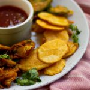

Aloo Pakora

Pakoras are the Pakistani version of a fritter, but made with besan (chickpea flour in English). The traditional ones are the potato pakoras (aloo kay pakoray) and onion pakoras (piyaaz kay pakoray), but chicken pakoras (boti kay pakoray), spinach pakoras (palak kay pakoray), green chili pakoras (hari mirch kay pakoray) are made quite often.
Ingredients
- ½ cup chickpea flour
- ¼ - ½ teaspoon red chili powder adjust to taste
- 1 teaspoon coriander powder dhaniya powder
- ⅛ teaspoon turmeric
- salt to taste (about ½ teaspoon)
- ¼ teaspoon coriander seeds, crushed (optional)
- ¼ teaspoon pomegranate seeds anaar dana (optional)
- 2 large potatoes
- Water to make the batter
- Oil for frying
- Chaat masala for garnish
Instructions
- Place the besan / chickpea flour in a bowl. Add red chili powder, coriander powder, turmeric powder, salt and coriander seeds or pomegranate seeds if using. Mix well with a fork.
- Add water (¼ cup at a time) to create a batter, and set aside for 30 minutes.
- Wash and peel the potatoes. Thinly slice them with a knife. You can use a mandolin, but just make sure the potato slices arent too thin. They should be thicker than a potato chip, but not too thick otherwise they wont cook from inside.
- Dip a sliced potato in the batter to check the batter consistency. It should coat the potatoes completely, but not be too thick otherwise the pakoras will be more batter and less about the potatoes.
- Heat oil in a karahi, wok or deep frying pan.
- Dip the sliced potatoes in the batter making sure to coat completely. Add to the hot oil. Cook on low - medium flame till the potatoes are golden brown on the outside (they will fluff up) and cooked through from inside.
- Use a slotted spoon to remove the pakoras, and drain on kitchen towel to remove excess oil.
- Garnish with chaat masala, and serve hot with chutney and ketchup on the side.